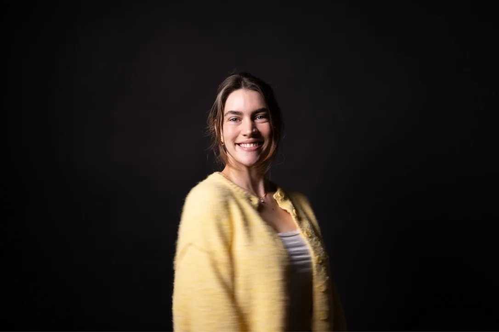

Ich bin
Bei mir hat alles mit der Fotografie begonnen. In den Familienferien nahm ich die Kamera zur Hand und drückte hunderte Male ab. Darunter waren erstaunlich viele holländische Nummernschilder, weil mir die Farbe so gut gefiel. Fortan wurde mir das Fotografieren in der Familie überlassen.
Später kaufte ich mir meine eigene Spiegelreflexkamera. Mit Freundinnen machte ich immer wieder Fotoshootings im Freien. Bald schickten mir meine Freundinnen auch ihre eigenen Bilder, damit ich sie bearbeite: störende Objekte entfernen oder die Poolfarbe ändern. Ich war dafür bekannt, dass ich Bilder unglaublich gerne bearbeite. Und die Fotoalben der Familienferien gestaltete ich mit Hingabe.
Beruflich ging es zuerst in eine andere Richtung: Nach der HF Tourismus schloss ich als Tourismusfachfrau ab und startete das BWL-Studium in Luzern. Schon nach wenigen Monaten merkte ich, dass es nicht zu mir passt. Mir fehlte die Kreativität, und ich sehnte mich danach.
Als ich das Studium abbrach, reiste ich mit der MMP-Broschüre zu meinen Eltern. Mein Vater blätterte kritisch durch, legte sie weg und sagte: «Das entspricht dir ja so viel mehr. Ich finde es super.» Dann wandte er sich an meine Mutter: «Schaust du bitte, dass sie sich anmeldet.» So begann meine Reise zu meinem heutigen Studium.
Gearbeitet habe ich schon immer in verschiedenen Branchen, vor allem im Marketing, wo ich Social-Media-Content und Videos erstellte. Richtige Filme zu machen, dafür bekam ich aber erst im Studium das Equipment und die Möglichkeiten. Dort fand ich auch meine Liebe zum Filmen und zur Postproduktion.
Heute verbinde ich das Auge der Fotografin mit dem Handwerk der Filmemacherin.
For me, it all started with photography. On family holidays I picked up the camera and took hundreds of photos. Among them were a surprising number of Dutch licence plates, because I loved the colour so much. From then on, taking the pictures was left to me.
Later I bought my own DSLR. With friends I did outdoor photo shoots again and again. Soon my friends also started sending me their own pictures for editing: removing distracting objects or changing the colour of the pool. I was known for how much I loved editing photos. And I designed the family holiday photo albums with devotion.
Professionally, I first went in a different direction: after my HF in tourism I qualified as a tourism professional and started a business administration degree in Lucerne. After just a few months I realised it wasn't for me. I lacked creativity, and I longed for it.
When I dropped out of the degree, I travelled to my parents with the MMP brochure. My father leafed through it critically, put it down and said: “This is so much more you. I think it's great.” Then he turned to my mother: “Please make sure she signs up.” That's how my journey to my current studies began.
I have always worked in different industries, mostly in marketing, where I created social media content and videos. But it was only during my studies that I got the equipment and the opportunities to make real films. That's also where I found my love of filmmaking and post-production.
Today I combine the eye of a photographer with the craft of a filmmaker.